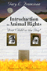
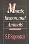

|
Cat
Culture: The Social World of a Cat Shelter
Alger,
Janet M. and Steven F. Alger
256 pp • 5.5x8.25 • Fall 2002
paper 978-1-56639-998-2
cloth 978-1-56639-997-5
|

|
Just a Dog
Understanding Animal Cruelty and Ourselves
Arluke, Arnold
232 pp • 6x9 • Spring 2006
paper 978-1-59213-472-4
cloth 978-1-59213-471-7
|

|
Regarding
Animals
Arluke,
Arnold and Clinton R. Sanders
256 pp • 5.5x8.25 • Spring 1996
paper 978-1-56639-441-3
cloth 978-1-56639-440-6
|

|
Animal
Passions and Beastly Virtues: Reflections on Redecorating Nature
Bekoff,
Marc, foreword by Jane Goodall
320 pp • 6x9 • Fall 2005
paper 978-1-59213-348-2
cloth 978-1-59213-347-5
|

|
Animals at Play
Rules of the Game
Bekoff, Marc, illustrations by Michael J. DiMotta
32 pp • 10x7• Fall 2008
cloth 978-1-59213-551-6 |

|
Deep
Vegetarianism
Fox,
Michael Allen
234 pp • 5.5x8.25 • Spring 1999
paper 978-1-56639-705-6
cloth 978-1-56639-704-9
|

|
Introduction
to Animal Rights: Your Child or the Dog?
Francione,
Gary L., foreword by Alan Watson
272 pp • 6x9 • Fall 2000
paper 978-1-56639-692-9
cloth 978-1-56639-691-2
|

|
Animals,
Property, and the Law
Francione,
Gary L., foreword by William M. Kunstler, Esq.
368 pp • 6x9 • Spring 1995
paper 978-1-56639-284-6
cloth 978-1-56639-283-9
|
 |
The Next Social Contract
Animals, the Anthropocene, and Biopolitics
Gabardi, Wayne
242 pp • 6x9 • Spring 2017
paper 978-1-4399-1412-0
cloth 978-1-4399-1411-3
|

|
Hearts
and Minds: The Controversy Over Laboratory Animals
Groves,
Julian McAllister
240 pp • 5.5x8.25 • Fall 1996
paper 978-1-56639-476-5
cloth 978-1-56639-475-8
|

|
Filling the Ark
Animal Welfare in Disasters
Irvine, Leslie
176 pp • 5.5x8.25 • Spring 2009
cloth 978-1-59213-1829-0
|

|
If
You Tame Me: Understanding Our Connection with Animals
Irvine,
Leslie, foreword by Marc Bekoff
240 pp • 6x9 • Spring 2004
paper 978-1-59213-241-6
cloth 978-1-59213-240-9
|

|
The
Wild Animal Story
edited
by Lutts, Ralph H.
328 pp • 6x9 • Spring 1998
paper 978-1-56639-918-0
cloth 978-1-56639-593-9
|

|
Vegetarianism:
Movement or Moment?
Maurer,
Donna
216 pp • 5.5x8.25 • Spring 2002
paper 978-1-56639-936-4
cloth 978-1-56639-935-7
|

|
The Two-in-One
Walking with Smokie, Walking with Blindness
Michalko, Rod
256 pp • 5.5x8.25 • Fall 1998
paper 978-1-56639-649-3
cloth 978-1-56639-648-6
|

|
Blue Juice
Euthanasia in Veterinary Medicine
Morris, Patricia
244 pp • 6x9 • Spring 2012
paper 978-1-4399-0706-1
cloth 978-1-4399-0705-4
|

|
Putting the Horse Before Descartes
My Life's Work on Behalf of Animals
Rollin, Bernard E.
304 pp • 6x9 • Fall 2010
cloth 978-1-59213-825-8
|

|
Understanding
Dogs: Living and Working with Canine Companions
Sanders,
Clinton R.
224 pp • 6x9 • Spring 1999
paper 978-1-56639-690-5
cloth 978-1-56639-689-9
|

|
Morals,
Reason, and Animals
Sapontzis,
S. F.
328 pp • Fall 1999
paper 978-0-87722-961-2
cloth 978-0-87722-493-8
|

|
Fishy Business
Salmon, Biology, and the Social Construction of Nature
Scarce, Rik
272 pp • 6x9 • Fall 1987
paper 978-1-56639-729-2
cloth 978-1-56639-728-5
|
.

|
Exploiting the Wilderness
An Analysis of Wildlife Crime
Warchol, Greg L.
210 pp • 6x9 • Fall 2017
paper 978-1-4399-1367-3
cloth 978-1-4399-1366-6
|

|
Livestock/Deadstock
Working with Farm Animals from Birth to Slaughter
Wilkie, Rhoda M.
248 pp • 6x9 • Spring 2010
paper 978-1-59213-649-0
cloth 978-1-59213-648-3
|